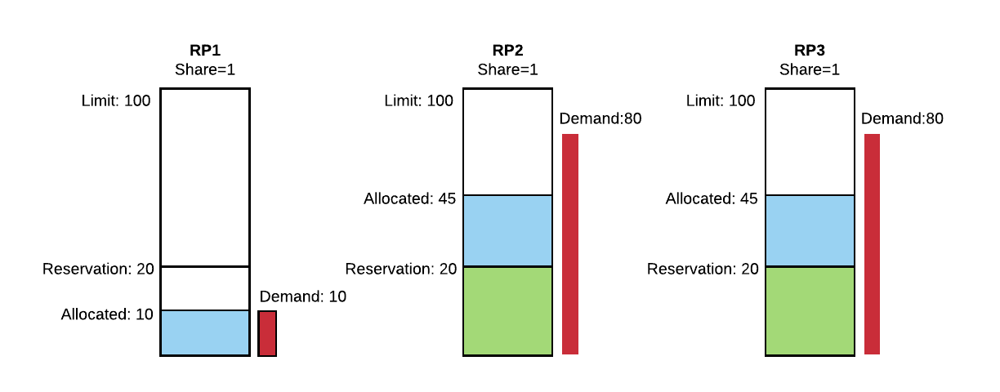

User Guide¶
Api Doc¶
- See the complete API documentation
Resource Pools¶
Resource Pool is a logical abstraction for a subset of resources in a cluster. All resources in a cluster can be divided into hierarchical resource pools based on organizations and teams. A resource pool can contain child resource pools to further divide the resources within an organization. Resource sharing among pools are elastic in nature. Resource pools with high demand can borrow resources from other pools if they are not using those resources. When a user submits a job, she must provide a leaf resource pool where the resources of the job will be accounted for. The resource pool tree is typically managed by Compute SRE team but the management of the sub-trees within an organization can be delegated to the organization’s SRE team.
Every resource pool has different resource dimensions, such as CPU, Memory, Disk Size and GPU. The number of resource dimensions will increase in the future when Mesos supports more resource isolations such as Disk IO.There are three basic resource controls for each resource dimension in a resource pool, i.e. Reservation, Limit, and Share. These settings can be used to provide different resource allocation policies for organizations.
Reservation is the minimal guarantee of resources for a resource pool. Cumulative resource reservation across all pools can not be more than a cluster capacity. This has to be configured carefully as that would be the guiding factor for defining and meeting SLA’s.
Limit is the maximum resources a resource pool can consume at any given time. Every resource pool can expand more than its reservation to this limit in case the cluster is free. At some point if more guaranteed workloads in other pools come to the cluster then we will give back those resources. These resources (which are more than the reservation) will not be guaranteed and is revocable in nature.
Share specifies the relative weight a resource pool is entitled to allocate when there is free capacity in the cluster. Similarly when preemption will kick in it will preempt the workloads based on the share as well. Least share will have more preemption.
Entitlement is the amount of resources which each resource pool can use across different resource hierarchies at any given point of time. This is a changing value which is based on demand in the resource pool and free resources in the cluster at that moment.
Allocation is the amount of resources which each resource pool is using (Allocated) at any given point of time.

Picture above shows a ATG resource pool with two child resource pools, i.e. AVMaps and Simulation. All resources in the cluster will be divided between these two organizations. Simulation is a leaf resource pool since it does not have any teams. So users are allowed to submit jobs at Simulation resource pool. However AvMaps has two child resource pools for AV-Build and AV-Release, so the resources in AVMaps will be further divided based on the resource pool settings of AV-Build and AV-Release.
Preemption¶
One of the features of Peloton is its ability to distribute unused resources to other resource pools that have higher demand. These unused resources are given to other resource pools with the understanding that they might be taken back once the pool from which these were taken needs it back again. Once the resources need to be given back, the tasks running with those resources need to be preempted and re-enqueued for admission control. This is central to improve the cluster’s utilization.
Let’s first recap the different resource pool dimensions. Resource pool dimensions
- Reservation - Reservation specifies the guaranteed minimum resources for a resource pool.
- Entitlement - The set of resources this resource pool is entitled to use based on its demand. It can be more or less than its reservation.
- Share - Shares specify the relative priority or importance of a resource pool. If a resource pool has twice as many shares of a resource as another resource pool, it is entitled to consume twice as much of that resource when these two resource pool are competing for resources.
- Limit - Limit specifies an upper bound for a resource that can be allocated to a resource pool.
- Allocation - The resources actually allocated to the jobs in a resource pool. A resource pool can allocate more than the reservation, but never allocates more than the limit, even if there is unutilized CPU or memory on the system.
- Demand - Demand specifies the number of resources waiting to be admitted to the resource pool.
Resource Sharing between Resource Pools¶
To understand how resource sharing works, let’s work through an example.
Example 1: Let’s say there are 100 resource units (e.g. CPU cores) in the cluster. We have three resource pools with Reservation of 20, Limit of 100, and Share of 1.

If there is enough demand in each resource pool, then 40 unreserved resource units and any free resources will be divided equally to each resource pool because each resource pool has equal share in the cluster. However, if a resource pool doesn’t have enough demand, then its allocation will be equal to the demand but less than the reservation. .
Figure 2 shows there is 10 demand in RP1 and 80 demand in both RP2 and RP3. As the resource demand in RP1 is less than its reservation, it only gets the 10 resource units. For RP2 and RP3, their demands are 80 which is much higher than their reservation, so their reservation will be satisfied first. After the reservations of all resource pools are satisfied, the remaining free resources in the cluster will be distributed to pools based on their shares. In this case, there are 40 unreserved resource units and 10 unused from RP1, so the total 50 resource units will be divided equally between RP2 and RP3 since they have the same share of 1.
Based on the above example we see that resource pools can share unused resources amongst each other depending on the demand. However, once resources are loaned to other resource pools, they might need to be taken back if the lender pool has increased demand. To support the concept of elastic resources, Peloton needs to preempt certain tasks from a resource pool if the revocable resources are taken back from it.
Based on above Example 1, let’s say at time T1, RP1 has a new demand of 50 resource units as shown in Figure 3 (RP2 and RP3 remain the same). In the next scheduling cycle, the entitlement of RP1 will become 33 (that is, 100 total resource units divided equally among all three pools), and we now need to take 23 resources from RP2 and RP3—rescinding part of their loans—to give back to RP1. Since RP2 and RP3 have the same share, they will both have to release same number of resources to make available for RP1. In this case, it would be 23/2 = 11.5.
The preemption will happen in two stages conceptually: 1. First, it will try to satisfy the reservation of RP1 20), so it needs 10 more resources; 10/2=5 will be taken away from each competing resource pool (RP2 and RP3).
- Second, the remaining 23-10=13 resources will also be taken to ensure all three pools have the same entitlement: 13/2=6.5 will be taken away from each competing resource pool (again, RP2 and RP3).

Preemption Order¶
Once a resource pool is marked for preemption—i.e. it is using more than its entitlement—then the scheduler will find and rank tasks for preemption to free up those resources. The tasks are ranked in the following order:
- State: Tasks that are still PENDING (i.e. haven’t started running in the cluster yet) are higher in the order to be preempted.
- Priority: The tasks’ priority (which is local within a resource pool).
- Runtime: Tasks that have been running for a shorter time are higher in the order to be preempted.
Once the tasks are filtered and ranked they are sent for preemption.
Job Level Preemption¶
Currently peloton only supports preemption at the Job level. This means that if the job is marked as preemptible in the Job’s SlaConfig then all tasks in the job will be preemptible as well and vice versa.
Preemption FAQ¶
Should I mark my jobs as preemptible or non-preemptible?
There is no right answer here since it’s a trade off and depends on the individual Job, but here are some considerations to keep in mind:
- If the job is marked as preemptible,
- It will be able to use the revocable resources assigned to its resource pool. That is, the Job will be able to use more than the resource pool’s reserved resources, provided that there are unallocated resources available in the cluster..
- The tasks of the Job can be preempted, so the tasks should be designed to be idempotent (tolerant of being stopped and starting again later).
- If the job is marked as non-preemptible,
- It will only use the reserved resources of the resource pool. Even if there are revocable resources available, it won’t be admitted if all the reserved resources are allocated.
- The tasks of the job won’t be preempted to make way for other tasks.
- If the job is marked as preemptible,
How is the task preempted?
When a task is preempted(essentially killed) it is sent a SIGTERM , there’s a 5 second grace period after which it is sent a SIGKILL
Will my task be restarted after preemption?
You can control the restart policy of the task in the Task Config
By Default the task will be rescheduled.
Will my task be restarted after preemption?
Priority is used by scheduler in 2 different places:
- Admission control: When the Jobs are submitted, they are admitted based on their priority; higher priority tasks will be admitted before lower priority tasks.
- Preemption: When the tasks are ranked for preemption, lower priority tasks will be preempted before higher priority tasks.
For a non-preemptible Job, priority is only used during admission control.
Does Peloton support preemption within a resource pool (a.k.a Priority Preemption) ?
There are 2 types of preemption:
- Inter resource pool preemption: This will enforce the max min fairness across all resource pools.This will apply preemption policies on the resources and claim back resources from the resource pools. The Admin should be able to plug in different preemption policies and preemption will happen based on the policy. We will try to use the Min-Max Fairness preemption Policy for the inter resource pool preemption.
- Intra resource pool preemption: This will enforce entitlement within the resource pool. Every pool could have many users and each of them has many jobs running. It may often happen that one user can use the capacity of the full resource pool and other users will wait for those jobs to finish. This will lead to SLA miss for the jobs which are stuck in the pool. Other scenario is, it may happen that the lower priority jobs are running and if higher priority job comes in then the scheduler has to make space for the higher priority jobs.
Peloton currently only supports “Inter resource pool preemption”. “Intra resource pool preemption” should be added in H1 2019.